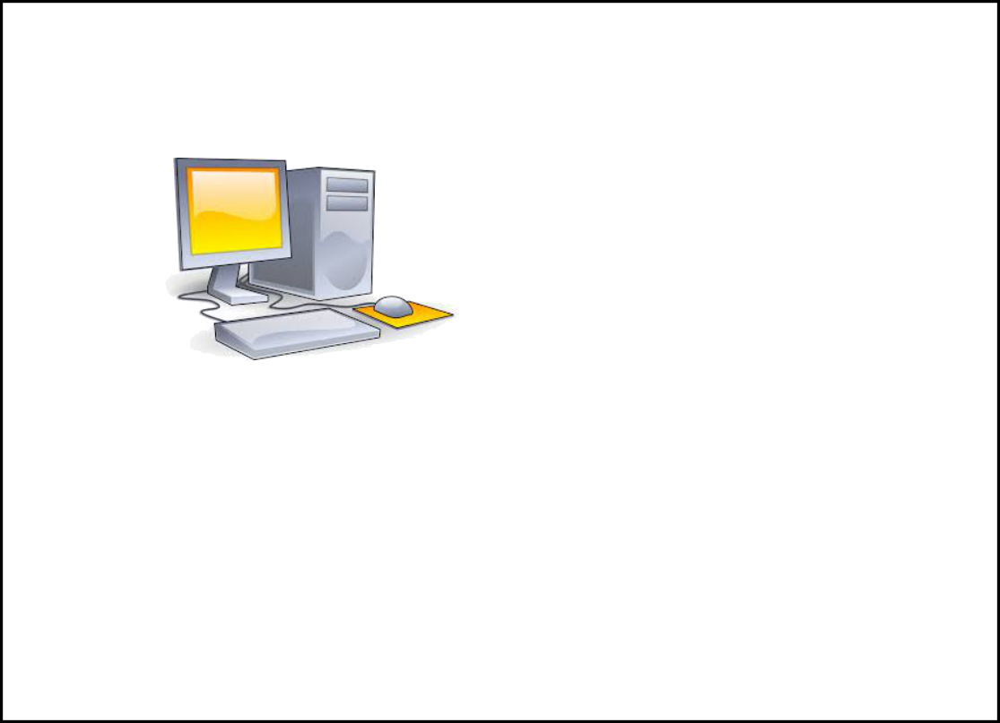
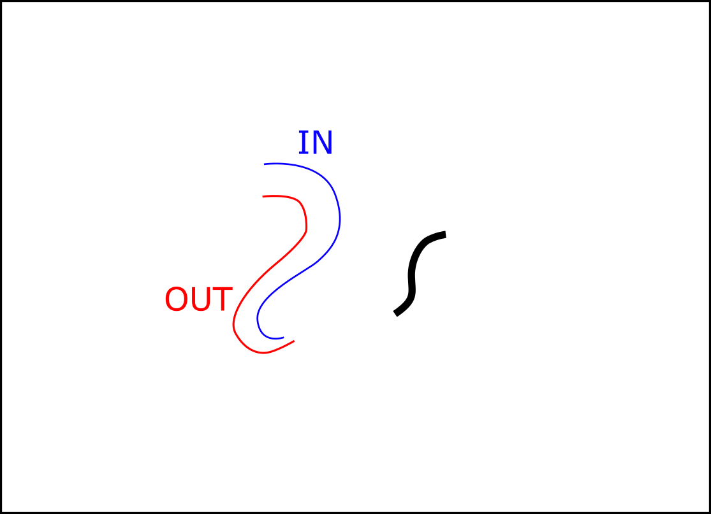
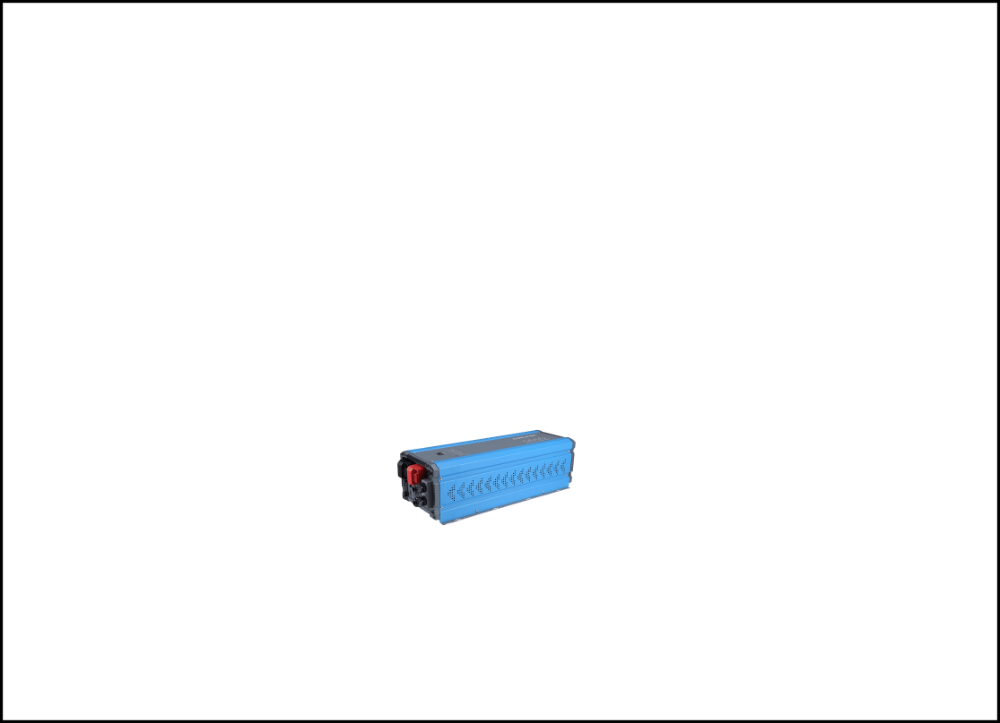
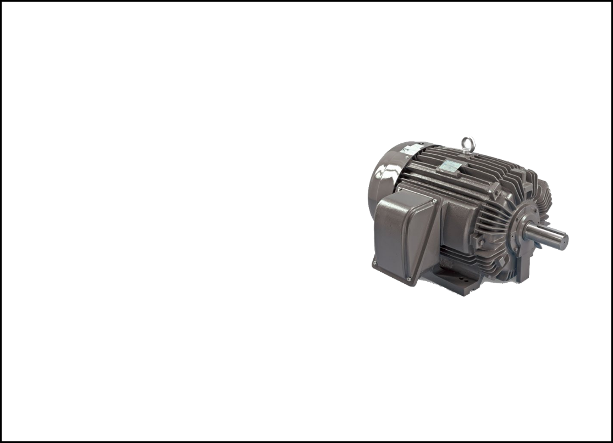

Computer Controlled Systems: | How to use: |
|
n = 1
while (1)
r[n] = reference()
y[n] = readIO(IN)
e[n] = r[n] - y[n]
u[n-1] + 0.5*(e[n]-e[n-1]) + 1.1*e[n]
writeIO(u[n+1],OUT)
n = n + 1
end
|




|
||||
|
n : 0 r : [] y : [] e : [] u : [] |
|||||